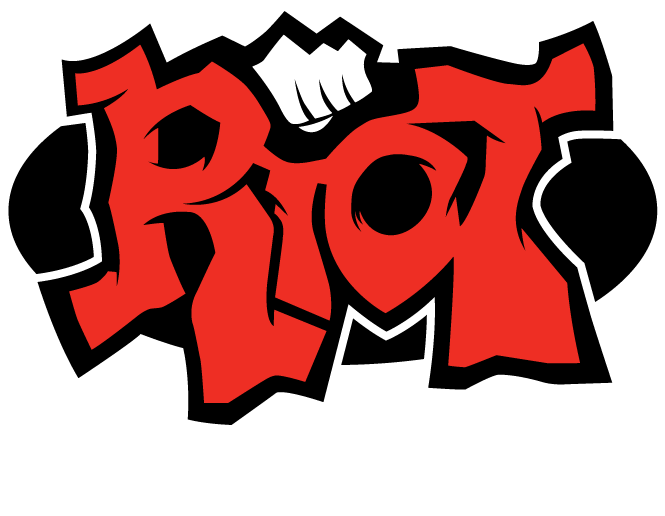

I chose the video game League of Legends to represent the visual program.
The reason is because I was able to relate different features of the game
to different concepts within our curriculum. Above are links that navigate
to different pages and within each page will explain further how each feature
relates to a concept or a design. You will be able to click on a link to any
page no matter where you are in the website since in the game you're able to
do any of the above features in any order that you want while playing the game.
The different features that I use are a Item Building, Gameplay,
Advanced Champion Techniques, and finally Ranks and Divisions.